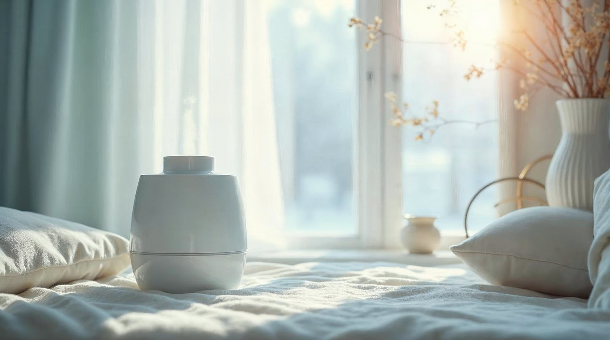

이종호 한의사 감수좋은꿈참사랑한의원 대표원장 (한의사 면허번호 19769)발행 2026-11-26 · 수정 2026-11-26
이 글의 차례
회의 중에 무심코 입술을 혀로 축이고, 일어난 각질을 앞니로 살짝 뜯어냅니다. 순간은 매끈해진 것 같지만 한 시간쯤 지나면 그 자리가 더 거칠어지고 따끔거립니다. 립밤을 하루에도 몇 번씩 덧바르는데, 입술은 좀처럼 편해지지 않습니다.
진료실에서 입술 이야기를 꺼내시는 분들은 대개 겨울 한철 트는 정도가 아니라 몇 달째 이어진다고 말씀하십니다. 입술 테두리가 붉게 번지고, 껍질이 겹겹이 일어나며, 웃거나 음식을 먹을 때 따가워서 신경이 쓰인다고요.
입술은 얼굴에서 가장 얇은 피부입니다. 땀샘과 기름샘이 거의 없어서 스스로 촉촉함을 지키는 힘이 약하고, 그래서 바깥 자극과 몸속 상태가 가장 먼저 드러나는 자리이기도 합니다. 입술이 오래 편하지 않다면 그 이유를 몇 갈래로 나눠 볼 필요가 있습니다.
저는 입술을 볼 때 입술만 보지 않습니다. 입으로 숨을 쉬는지, 물을 얼마나 드시는지, 속이 쓰리거나 입이 마르는지, 잠은 어떠신지를 함께 여쭙습니다. 입술은 생활 습관과 속의 열이 만나는 자리라서, 그 둘을 나란히 놓고 보아야 실마리가 보입니다.
구순염은 어떤 상태인가요?
구순염은 입술에 생기는 염증을 통틀어 부르는 말입니다. 겨울에 잠깐 트는 것과 달리, 각질과 붉은 기운, 따가움이 몇 주에서 몇 달씩 이어지거나 좋아졌다 나빠졌다를 되풀이하는 경우가 많습니다.
흔히 보는 모습은 몇 가지로 나뉩니다. 입술 전체가 마르고 껍질이 겹겹이 일어나는 경우, 입술 테두리를 따라 붉은 띠가 생기고 바깥 피부까지 거칠어지는 경우, 입술이 붓고 화끈거리며 작은 물집이나 진물이 생기는 경우입니다.
입꼬리가 갈라지는 구각염이나 입술 가장자리에 물집이 무리 지어 생기는 입술 헤르페스도 입술에 생기지만, 원인과 관리가 조금 다릅니다. 이 글에서는 입술 전체의 각질과 붉은 기운, 따가움을 중심으로 이야기합니다.
왜 입술 각질이 계속 일어날까요
가장 흔한 이유는 입술을 혀로 핥는 습관입니다. 침이 닿으면 잠깐 촉촉해지지만, 침이 마르면서 입술의 수분까지 함께 데려갑니다. 게다가 침 속의 소화 효소가 얇은 입술 피부를 자극해서, 핥을수록 더 마르고 더 핥게 되는 고리가 생깁니다.
여기에 여러 요인이 겹칩니다.
- 일어난 각질을 이로 뜯거나 손으로 벗기는 습관
- 입으로 숨을 쉬는 습관, 특히 코가 막혀 자는 동안 입을 벌리는 경우
- 립밤, 립스틱, 치약, 구강청결제 속 향료나 성분에 대한 자극
- 매운 음식, 신 과일, 뜨거운 국물이 입술에 자주 닿는 식습관
- 난방이 강한 실내와 찬 바깥바람이 번갈아 닿는 환경
- 물을 적게 드시고 입이 자주 마르는 경우
립밤이 오히려 원인이 되는 경우도 있습니다. 박하, 계피, 향료, 일부 방부제는 사람에 따라 접촉 피부염을 일으킬 수 있습니다. 바를 때 화끈하고 시원한 느낌이 드는 제품은 잠깐 편해 보여도 자극이 될 수 있어서 함께 살펴봅니다.
몸속 상태가 입술로 드러나기도 합니다. 철분이나 비타민 B군이 부족할 때, 침이 적게 나오는 구강건조증이 있을 때, 일부 약을 드실 때 입술이 쉽게 마를 수 있습니다. 여드름 약 가운데 입술을 몹시 마르게 하는 약이 있어서, 드시는 약을 꼭 함께 여쭙니다.
한의학에서는 입술을 비위, 곧 소화기와 가깝게 봅니다. 속이 쓰리고 입이 마르며 입술이 붉게 트는 흐름을 속에 열이 쌓인 모습으로 보기도 하고, 반대로 기운이 처지고 입술이 창백하게 마르는 흐름을 함께 구분해 봅니다.
다른 입술 증상과는 어떻게 다를까요?
입술 헤르페스는 입술 가장자리에 작은 물집이 무리 지어 올라오고, 올라오기 전에 그 자리가 찌릿하거나 화끈거리는 느낌이 먼저 오는 것이 특징입니다. 피곤하거나 찬바람을 맞은 뒤 같은 자리에 되풀이되는 경우가 많고, 옮을 수 있어 관리 방법이 다릅니다.
구각염은 입꼬리 양쪽이 갈라지고 헐어서 입을 크게 벌릴 때 따가운 것이 특징입니다. 침이 고이는 자리라서 곰팡이나 세균이 함께 관여하기도 합니다. 입술 전체가 아니라 입꼬리에만 집중되어 있다면 이쪽을 먼저 생각합니다.
햇볕을 많이 받는 일을 오래 하신 분이라면, 아랫입술이 하얗게 거칠어지고 경계가 흐려지는 변화를 함께 살핍니다. 이런 변화는 피부과에서 확인해 두는 것이 좋습니다.
입술을 위한다고 하는 일이 오히려 자극이 될 때
첫째, 립밤을 너무 자주, 여러 종류를 번갈아 바르는 것입니다. 어떤 제품이 자극이 되는지 알 수 없게 되고, 성분이 겹쳐 오히려 예민해질 수 있습니다. 향이 없는 단순한 제품 하나를 정해 2주 정도 써 보시는 것이 좋습니다.
둘째, 각질을 스크럽이나 칫솔로 벗겨 내는 것입니다. 매끈해 보이지만 아직 준비가 안 된 아래 피부까지 드러나서, 다음 날 더 거칠어지기 쉽습니다. 각질은 보습을 이어 가면 저절로 떨어지도록 두는 것이 좋습니다.
셋째, 따가울 때 연고를 아무거나 바르는 것입니다. 스테로이드 연고를 입술에 오래 바르면 오히려 입 주변 피부가 예민해지는 경우가 있습니다. 연고는 처방받은 대로, 정해진 기간만 쓰시는 것이 좋습니다.
긴장하면 입술에 손이 가는 이유
입술을 뜯는 습관은 마음이 바쁘거나 긴장할 때 더 잦아집니다. 시험공부를 하거나 마감에 쫓길 때, 화면을 오래 들여다볼 때 자기도 모르게 입술에 손이 가고, 정신을 차려 보면 입술에 피가 맺혀 있기도 합니다.
이런 습관은 의지로만 멈추기가 어렵습니다. 그래서 언제 주로 손이 가는지를 먼저 알아차리는 것부터 시작합니다. 책상 위에 립밤을 두고 손이 입술로 갈 때 대신 바르거나, 손에 쥘 수 있는 작은 물건을 두는 것도 방법입니다.
긴장이 오래 이어지면 잠도 얕아지고, 자는 동안 이를 악물거나 입으로 숨을 쉬는 일도 늘어납니다. 입술이 아침마다 유난히 거칠다면 밤사이 습관도 함께 살펴봅니다.

계절과 하루에 따라 달라지는 입술
겨울에는 바깥의 찬바람과 실내 난방이 번갈아 입술을 말립니다. 마스크를 오래 쓰는 날에는 숨의 습기가 입술에 닿았다 마르기를 되풀이하면서 테두리가 붉어지기도 합니다. 마스크를 벗은 뒤에는 입술을 가볍게 닦고 보습제를 다시 발라 주세요.
여름에는 햇볕과 땀, 짠 음식이 입술을 자극합니다. 바깥 활동이 길면 자외선 차단 기능이 있는 립 제품을 쓰시는 것도 좋습니다. 하루 중에는 아침에 일어났을 때와 식사 직후에 가장 불편하다는 분이 많아서, 그 두 때를 보습 시각으로 정해 두시면 기억하기 쉽습니다.
먼저 이렇게 여쭙니다
처음 오시면 저는 대략 이런 순서로 여쭙니다. 미리 생각해 오시면 이야기가 훨씬 수월해집니다.
- 입술이 불편해진 지 얼마나 되었고, 계절과 상관없이 이어지는지요?
- 입술을 핥거나 각질을 뜯는 습관이 있으신가요?
- 쓰고 계신 립밤, 립스틱, 치약은 무엇이고, 최근에 바꾼 것이 있나요?
- 코가 자주 막히거나 자고 일어나면 입이 바짝 말라 있나요?
- 속쓰림, 입마름, 변비가 함께 있나요?
- 드시는 약이나 최근 시작한 약이 있나요?
물을 하루에 얼마나 드시는지, 커피와 술은 어느 정도인지도 함께 여쭙니다. 커피를 물 대신 드시는 분이 많은데, 커피는 소변을 늘려 몸의 수분을 줄일 수 있습니다. 최근 건강검진에서 빈혈이나 혈당 이야기를 들으셨다면 그 결과도 함께 가져와 주세요.
일상에서 먼저 해 볼 수 있는 것
입술은 자극을 줄이는 것만으로도 달라지는 경우가 많습니다. 한꺼번에 다 하시기보다 쉬운 것 하나부터 골라 2주 이어 보세요.
- 입술 핥기와 각질 뜯기를 알아차리면 대신 립밤 바르기
- 향과 박하가 없는 바셀린 계열의 단순한 보습제 하나로 정하기
- 잠들기 전 보습제를 두껍게 바르고 자기
- 물을 낮 동안 조금씩 자주 마시기
- 매운 음식과 신 과일을 먹은 뒤에는 입술을 물로 가볍게 헹구기
- 방 습도를 40~60%로 맞추고, 바깥에서는 마스크로 찬바람 막기
입으로 숨을 쉬는 습관이 있다면 코가 막히는 이유를 함께 살펴야 합니다. 비염이나 코막힘 때문이라면 이비인후과 진료를 함께 받으시는 것이 좋습니다. 낮에 입이 벌어져 있는 것을 알아차릴 때마다 입을 다물고 코로 숨 쉬는 연습도 도움이 됩니다.
치약도 한번 살펴보세요. 거품을 많이 내는 성분이나 강한 향이 입술 주변을 자극하는 경우가 있습니다. 양치한 뒤 입 주변을 물로 충분히 헹구고, 자극이 의심되면 순한 치약으로 바꿔 2주 정도 지켜보시면 좋습니다.
속을 편하게 하는 것도 입술을 돌보는 일입니다. 늦은 밤 야식과 과음, 맵고 기름진 음식이 이어지면 속이 쓰리고 입이 마르면서 입술도 함께 거칠어지는 흐름을 자주 봅니다. 저녁은 잠들기 3시간 전에 마치는 것부터 해 보세요. 뜨거운 국물은 한 김 식혀서 드시고, 컵은 입술에 오래 대지 않는 습관도 함께 들여 보세요.
작은 자극을 줄이는 것이 쌓여 입술이 한결 편해집니다.
한의원에서 함께 살필 수 있는 경우
- 입술 각질과 붉은 기운이 몇 주 이상 이어지고 속쓰림, 입마름이 함께 있는 경우
- 입이 자주 마르고 잠이 얕으며 얼굴로 열이 오르는 경우
- 피곤하거나 긴장하면 입술이 먼저 트고 갈라지는 경우
- 피부과 치료를 받으면서 소화와 잠을 함께 살피고 싶은 경우
좋은꿈참사랑한의원에 오시면 먼저 아래 '먼저 확인이 필요한' 신호가 없는지부터 봅니다. 그다음 맥을 짚고 입술과 혀를 살피며, 소화와 대변, 입마름, 잠을 여쭙니다. 입술의 붉기와 마른 정도, 혀의 색을 함께 보며 속의 열과 진액의 흐름을 살핍니다.
진찰한 내용을 바탕으로 생활에서 바꿔 볼 것 하나와 함께 침, 한약 상담 가운데 지금 상태에 맞는 것을 정합니다. 한약을 상의할 때는 드시는 약을 모두 확인하고 신중하게 정합니다. 임신 중이시라면 먼저 알려 주시고, 산부인과 선생님과 상의한 뒤 진료 방향을 정합니다.
한의원 진료는 피부과 진료를 대신하는 것이 아니라 나란히 가는 것입니다. 피부과에서 입술의 염증을 다루고, 한의원에서는 그 바탕에 있는 속열과 입마름, 생활 리듬을 함께 살핀다고 생각해 주시면 됩니다.
이렇게 기록해 오시면 상담이 쉬워집니다
입술은 하루에도 여러 번 상태가 바뀌어서, 짧게라도 적어 두시면 무엇이 자극이 되는지 찾기가 훨씬 쉬워집니다. 2주 정도만 적어 보세요.
- 입술이 가장 불편했던 시각과 그날 먹은 음식
- 립밤을 바른 횟수와 제품 이름
- 입술을 핥거나 뜯은 것을 알아차린 횟수
- 자고 일어났을 때 입이 말라 있었는지
- 물을 마신 양과 커피, 술을 드신 날
- 새로 쓰기 시작한 화장품, 치약, 약
같은 각도에서 입술 사진을 며칠 간격으로 찍어 두시면 더 좋습니다. 붉은 테두리가 줄어드는지, 각질이 덜 일어나는지를 나란히 놓고 보면 어떤 습관이 도움이 되었는지 보입니다.
입술이 편해지는 데 걸리는 시간
입술 피부는 얇은 만큼 회복도 비교적 빠른 편이지만, 오래 이어진 습관이 바뀌는 데에는 시간이 걸립니다. 핥고 뜯는 습관을 줄이고 단순한 보습을 이어 가며 2~3주는 지켜보셔야 흐름을 가늠할 수 있습니다.
중간에 하루 이틀 다시 뜯었다고 처음부터 실패한 것은 아닙니다. 습관은 줄었다 늘었다 하며 조금씩 바뀝니다. 뜯은 날을 기록에 표시해 두면, 그날이 유난히 바쁘거나 긴장했던 날이었다는 것을 알게 되고 그것이 또 하나의 실마리가 됩니다.
입술은 얼굴에서 가장 먼저 눈에 띄는 자리라 불편함이 마음에도 오래 남습니다. 작은 습관 하나를 바꾸는 것부터 함께 시작해 보겠습니다.
이번 주에는 립밤을 향 없는 것 하나로 정하고, 입술을 핥고 싶을 때 대신 바르는 것 하나만 해 보세요. 다음에 오시면 사진과 기록부터 함께 펼쳐 보겠습니다.
이런 증상은 먼저 확인이 필요합니다
- 입술이나 혀, 얼굴이 갑자기 부어오르면서 숨쉬기나 삼키기가 어려운 경우
- 입술에 낫지 않는 헌 자리나 단단한 덩어리가 몇 주 넘게 이어지고 쉽게 피가 나는 경우
이런 신호가 있으면 한의원보다 가까운 병원이나 응급실을 먼저 찾으세요.
함께 읽으면 좋은 글
- 혀와 입안이 따갑고 화끈거리는 구강작열감은 어떻게 살피나요?
- 자고 일어나면 입이 바짝 마르고 목이 칼칼할 때는 어떻게 살피나요?
- 속쓰림과 신물이 오래 갈 때 어떤 점을 살펴보고, 언제 검사를 받아야 하나요?
- 물을 마셔도 입이 바싹 마르는 구강건조증은 어떻게 살피나요?
- 갱년기 무렵 눈·입·피부가 부쩍 건조해졌을 때는 무엇을 살피나요?
여쭙는 것
- 입술이 불편해진 지 얼마나 되었고, 계절과 상관없이 이어지는지요?
- 입술을 핥거나 각질을 뜯는 습관이 있으신가요?
- 쓰고 계신 립밤, 립스틱, 치약은 무엇이고, 최근에 바꾼 것이 있나요?
생활에서 해 볼 것
- 입술 핥기와 각질 뜯기를 알아차리면 대신 립밤 바르기
- 향과 박하가 없는 바셀린 계열의 단순한 보습제 하나로 정하기
- 잠들기 전 보습제를 두껍게 바르고 자기
한의원에서 함께 살필 것
- 입술 각질과 붉은 기운이 몇 주 이상 이어지고 속쓰림, 입마름이 함께 있는 경우
- 입이 자주 마르고 잠이 얕으며 얼굴로 열이 오르는 경우
- 피곤하거나 긴장하면 입술이 먼저 트고 갈라지는 경우
먼저 확인이 필요한 신호
- 입술이나 혀, 얼굴이 갑자기 부어오르면서 숨쉬기나 삼키기가 어려운 경우
- 입술에 낫지 않는 헌 자리나 단단한 덩어리가 몇 주 넘게 이어지고 쉽게 피가 나는 경우
한눈에 보는 표
| 구분 | 핵심 |
|---|---|
| 여쭙는 것 | 입술이 불편해진 지 얼마나 되었고, 계절과 상관없이 이어지는지요? 입술을 핥거나 각질을 뜯는 습관이 있으신가요? |
| 생활에서 해 볼 것 | 입술 핥기와 각질 뜯기를 알아차리면 대신 립밤 바르기 향과 박하가 없는 바셀린 계열의 단순한 보습제 하나로 정하기 |
| 한의원에서 함께 살필 것 | 입술 각질과 붉은 기운이 몇 주 이상 이어지고 속쓰림, 입마름이 함께 있는 경우 입이 자주 마르고 잠이 얕으며 얼굴로 열이 오르는 경우 |
| 먼저 확인이 필요한 신호 | 입술이나 혀, 얼굴이 갑자기 부어오르면서 숨쉬기나 삼키기가 어려운 경우 입술에 낫지 않는 헌 자리나 단단한 덩어리가 몇 주 넘게 이어지고 쉽게 피가 나는 경우 |
자주 묻는 질문
립밤을 자주 바르는데도 입술이 계속 트는 이유는 뭔가요?
립밤 속 향료나 박하 성분이 오히려 자극이 되거나, 바르는 사이사이 입술을 핥는 습관이 남아 있는 경우가 많습니다. 향 없는 단순한 보습제 하나로 정해 2주 정도 지켜보세요.
입술 각질은 뜯어도 되나요?
권하지 않습니다. 아직 준비가 안 된 아래 피부까지 드러나서 더 거칠어지고 따가워지기 쉽습니다. 보습을 이어 가면 각질이 저절로 떨어지도록 두는 것이 좋습니다.
치약 때문에도 입술이 트나요?
거품을 내는 성분이나 강한 향이 사람에 따라 입술 주변을 자극할 수 있습니다. 양치 뒤 입 주변을 충분히 헹구고, 의심되면 순한 치약으로 바꿔 지켜보세요.
입술이 자꾸 트는 게 속과 관련이 있나요?
속쓰림과 입마름이 함께 있을 때 입술도 거칠어지는 흐름을 자주 봅니다. 한의원에서는 입술과 혀, 맥을 함께 보며 소화와 잠, 입마름을 함께 살핍니다.
여드름 약을 먹고 입술이 몹시 말라요. 약을 끊어야 하나요?
혼자 끊지 마시고 처방한 선생님께 먼저 말씀해 주세요. 그 약은 입술 건조가 흔한 편이라 보습 방법을 안내받거나 용량을 조정하는 경우가 있습니다.
좋은꿈참사랑한의원은 재진 때 지난번 이야기부터 이어서 여쭙니다. 진료시간과 예약은 오시는 길에서 확인하세요.
어디서 상담받을 수 있나요?
좋은꿈참사랑한의원은 서울 동작구 만양로2길 2 신성빌딩 3층·5층(서울 동작구 상도동, 7호선 상도역 3번 출구 근처)에 있습니다. 한의사 3명(이종호 대표원장, 조영기 수석진료원장, 정원영 진료원장)이 진료합니다. 진료시간은 평일 09:30~20:00(점심 13:00~14:00), 토·일·공휴일 09:30~15:00이며, 방문 전 전화로 확인을 권합니다. 예약은 네이버 예약, 카카오톡 상담, 전화 02-815-7510로 받습니다.
이 글은 일반적인 건강 정보이며 개인의 진단이나 치료를 대신하지 않습니다. 증상이 있거나 복용 중인 약이 있다면 진료를 통해 확인하세요. 치료 효과는 개인마다 다를 수 있습니다.
작성 기준: 일반적으로 알려져 있는 건강 정보를 참고해 정리했습니다(대표원장 감수). 증상 기록은 1~2주 동안 하루 1회, 비슷한 시간에 적어 오시면 지난 상태와 비교하기 쉽습니다.